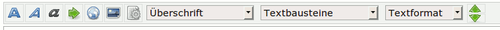
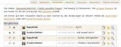

FAQ - häufig gestellte Fragen
Ein Wiki zeichnet sich dadurch aus, dass sich jeder daran beteiligen kann. Jeder kann vom passiven Leser zum aktiven Autor werden und damit das Wiki kontinuierlich verbessern. Durch die zunehmende Popularität von Ubuntu hat sich auch die Community um ubuntuusers.de enorm vergrößert.
Bezüglich des Wikis bestehen aber häufig Unsicherheiten und Unklarheiten, wie man Artikel bearbeitet – und ob man dies überhaupt darf. Wir wollen an dieser Stelle durch Antworten auf häufig gestellte Fragen die Missverständnisse klären und die größten Anfangsprobleme beseitigen!
Grundstruktur des Wikis¶
Das Wiki umfasst Tausende von Informationsseiten. Ferner gibt es Seiten „in Überarbeitung“ und „in der Baustelle“: Bei überarbeiteten Seiten gibt es das (alte) Original und eine (neue) noch nicht fertige Version, die in der Baustelle liegt. In der Baustelle werden Artikel überarbeitet und auch neu geschrieben. Das bedingt, dass Baustellenartikel noch Fehler enthalten können und daher nicht für den Normalnutzer gedacht sind.
Unter welcher Lizenz stehen die Wiki-Artikel?¶
Für alle Wikiartikel gilt die gleiche Lizenz, welche auf der Lizenzseite von ubuntuusers.de aufgeführt ist. Dieser Lizenz stimmt man auch jedesmal explizit zu, wenn man einen Wikiartikel be- / überarbeitet hat und anschließend auf die Schaltfläche "Speichern" klickt.
Die Lizenz gilt für jede Artikel im Wiki, also auch für solche, die sich in der Baustelle zwecks Neuerstellung oder Überarbeitung befinden.
Wer darf Artikel im Wiki bearbeiten?¶
Jeder, der bei ubuntuusers.de registriert ist, kann und sollte das Wiki bearbeiten – und dabei insbesondere Ergänzungen vornehmen und Fehler korrigieren.
Informationen zur Benutzung und Bearbeitung des Wikis findet man unter:
Artikel können über den Reiter "Bearbeiten" verändert werden. Falls der "Bearbeiten"-Reiter rechts oberhalb des Artikels nicht auftaucht, liegt das vermutlich daran, dass man nicht angemeldet ist. In diesem Fall sollte man sich einfach einloggen und die Wikiseite erneut laden. Ist man angemeldet und der Reiter ist trotzdem nicht vorhanden, bedeutet dies, dass die Seite nicht für einen normalen Benutzer editierbar ist – was aber nur auf Übersichts-, Dokumentations- und Systemseiten der Fall ist. Falls man auf diesen Seiten Fehler findet, reicht es, den Reiter "Diskussion" zu benutzen (auch wenn er ausgegraut ist) und dort seine Anmerkung mitzuteilen.
Ich möchte Artikel schreiben oder verbessern. Wo fange ich am besten an?¶
Es gibt einige Anlaufstellen, die bei der Suche nach einem geeigneten Thema helfen können:
Wiki/Autor gesucht: Diese Seite bietet einen ersten Überblick für diejenigen, die Lust haben, einen neuen Artikel zu schreiben.
Wiki/Artikelideen: Hier finden sich Artikelvorschläge unserer Nutzer.
Baustelle/Verlassen: Hier stehen Artikelentwürfe, die von den ursprünglichen Autoren nicht fertiggestellt wurden.
Persönliche Lieblingsthemen, Zeitungsartikel oder Funde im Internet sind natürlich ebenfalls hervorragend geeignet, als Inspiration neuer Artikel zu dienen.
Wie bearbeitet man einen Artikel?¶
Kleine Korrekturen¶
Kleine Korrekturen wie z.B. das Ausbessern von Tipp- oder Grammatikfehlern, die Aktualisierung von Links oder die Ergänzung einer Ubuntuversion, mit der die Anleitung funktioniert, können direkt im Wikiartikel vorgenommen werden. Möchte man allerdings den Artikel in etwas größerem Maßstab erweitern, bspw. durch das Hinzufügen einer Problemlösung in einem eigenen Abschnitt, empfiehlt es sich, zuerst in der zugehörigen Diskussion nachzufragen. Die Diskussion ist ebenfalls ein guter Ort, um Fehler im Artikel zu melden, zu denen man selbst (noch) keine Lösung gefunden hat.
Überarbeitung¶
Möchte man einen bereits bestehenden Artikel umfangreicher überarbeiten, stellt man sein Anliegen erst einmal über den Reiter "Diskussion" in der jeweiligen Artikeldiskussion kurz vor. Ein Wiki-Moderator wird dann den Artikel in die Baustelle verschieben und durch eine Kopie ersetzen.
Der Hintergrund ist folgender: Im „richtigen“ Wiki verbleibt der Vollständigkeit halber eine Kopie des Artikels. In der Baustelle wird dann der Originalartikel bearbeitet, um die vollständige Versionsgeschichte zu erhalten. Das weitere Vorgehen unterscheidet sich dann nicht von der Handhabung neuer Artikel.
Beim Kopieren von Teilen eines Artikels in einen neuen oder überarbeiteten Artikel sollte bitte immer der Originalautor angeben werden. Die Autorennennung kann dabei im Feld "Änderungsnotiz" erfolgen.
Ich verstehe die Syntax nicht und möchte nichts kaputt machen¶
|  |
| Editor- und Hilfsleiste |
Das Wiki hat einen Editor, der mit Hilfe von Schaltflächen – ähnlich einer Textverarbeitung – das Formatieren des Textes unterstützt. Bei der Textgestaltung sollte man sich an die Formatierungsregeln halten, um ein einheitliches Layout und Erscheinungsbild zu wahren.
Vor dem Speichern ist es hilfreich, die Vorschau-Funktion zu nutzen. So kann man offensichtliche Syntax- und Tippfehler ausbügeln. Vor dem Speichern muss im Feld "Änderungsnotiz" ein (kurzer) Hinweis über die Art der Änderung hinterlassen werden. So kann man in der Revisionsübersicht schnell sehen, wer was zum Artikel beigetragen hat.
Es ist nicht möglich, etwas kaputt zu machen oder versehentlich zu löschen! Das Wiki ist vollständig revisioniert und vorherige Version von Wikiartikel können ohne Probleme wieder hergestellt werden. Alle Änderungen werden zudem vom Wiki-Team regelmäßig durchgesehen. Also nur Mut – und bei Problemen einfach nachfragen!
Ich bin aber nicht der Autor des Artikels¶
Es zeichnet ein Wiki aus, dass mehrere Personen an einem Artikel arbeiten können. Dem Hauptautor „gehört“ der Artikel nicht, das ist auch durch unsere Lizenz geregelt, der jeder bei der Anmeldung zustimmen muss. Wenn man etwas verändern will, kann man das ohne Bedenken direkt machen.
Ich möchte den Autor eines Artikels kontaktieren¶
|  |
| Versionen eines Artikels |
Möchte man den Autor eines Artikels kontaktieren, muss man diesen zunächst ausfindig machen. Dies erledigt man über den Reiter "Verlauf": Hier kann man sehen, wer am Artikel gearbeitet hat. Mit der Spalte "Vergleichen" kann man sich einzelne Änderungen anzeigen lassen.
Da mitunter mehrere Autoren an einem Artikel mitgearbeitet haben oder der Autor das beschriebene Programm nicht mehr nutzt, ist diese Möglichkeit allerdings kein Garant für Erfolg. Auch kann der Autor nicht immer ausfindig gemacht werden. Für Fragen zu speziellen Problemen muss man also die Artikeldiskussion nutzen. Sollte das Problem gelöst worden sein, steht es jedem frei, notwendige Ergänzungen im Wikiartikel vorzunehmen.
Wie erstellt man einen neuen Artikel?¶
Neue Wikiartikel werden über die Seite Wikiartikel anlegen erstellt. Diese Seite gibt auch erste Bearbeitungshinweise. Unten auf der Seite gibt man einfach den gewünschten Artikelnamen ein und klickt  auf "Seite erstellen". Der so erstellte neue Artikel liegt nun in der Baustelle und kann dort ungestört bearbeitet werden.
auf "Seite erstellen". Der so erstellte neue Artikel liegt nun in der Baustelle und kann dort ungestört bearbeitet werden.
Mein Artikel ist fertig. Und jetzt?¶
Ist der Artikel fertiggestellt, heißt es, sich bemerkbar zu machen: Auf der Wikiseite muss dazu oben rechts "Diskussion" angewählt werden. Dadurch wird im Forum „Rund ums Wiki“ automatisch eine neue Diskussion eröffnet, die mit der Baustellenseite verknüpft ist. Nun können andere Benutzer sowie Moderatoren ihre Meinungen, Ideen und Verbesserungsvorschläge einbringen. Sofern hochgeladene Bilder nicht verwendet werden, sollte man dies direkt in der Diskussion mitteilen, damit das Wikiteam diese löschen kann.
Sind am Ende alle Vorgaben für einen Wikiartikel erfüllt, wird anschließend – in der Regel innerhalb der nächsten Tage – von einem Wiki-Moderator der Baustelle-Status aufgelöst, der Artikel ins „richtige“ Wiki verschoben und auf der Seite Wiki/Neue Artikel verlinkt.
Keine Rückmeldung zu meinem Artikel¶
Sofern man mehr als zwei Tage kein Feedback zu einem Artikel erhalten hat, ist es sinnvoll, sich erneut in der Diskussion zu melden – wir sind zum einen nicht immer online, zum anderen kann es bei vielen neuen Artikeln sein, dass wir mit der Bearbeitung neuer Artikel etwas in Rückstand geraten! Danke für euer Verständnis!
Das Wiki ist nicht erreichbar oder es gibt Fehlermeldungen¶
Bei technischen Schwierigkeiten meldet man sich im Forum Rund um ubuntuusers.de. Da in solchen Fällen alle Benutzer betroffen sind, sollte man sich vor der Erstellung eines neuen Beitrages zuerst vergewissern, dass noch keine aktuelle Diskussion existiert.
Artikel in der Baustelle¶
Die Baustellenseiten enthalten noch nicht fertig gestellte Artikel. Sie können formale wie inhaltliche Defizite aufweisen. In der Regel enthalten sie die Vorlage Baustelle, welche besagt, wer den Artikel begonnen hat – und somit vermutlich der Hauptautor ist – und bis wann er fertiggestellt werden soll.
Auch wenn es einen Hauptautor und ein noch nicht überschrittenes Fertigstellungsdatum gibt, ist dies kein Grund, nicht am Artikel mitzuhelfen. Aus Höflichkeit sollte man den Ersteller einmal kurz fragen, ob er dies möchte. Nach den bisherigen Erfahrungen wird niemand Hilfe kategorisch ablehnen. Sollte der ursprüngliche Ersteller doch einmal eine Veränderung für unpassend halten, sollte dies in der Diskussion des Artikelentwurfs im Forum besprochen werden. Derartige Differenzen stellen aber eine absolute Ausnahme dar.
Hat der Ersteller kein Fertigstellungsdatum eingetragen oder ist dieses verstrichen, kann man sich das Kontaktieren ersparen. Eine Ausnahme bilden Artikel, die in den letzten zwei Monaten vom Autor bearbeitet wurden. In diesem Fall kann man eine private Nachricht an den Autor schicken, da er möglicherweise zu Hause weiter am Artikel gearbeitet hat und keine Zeit hatte, die Baustelle zu aktualisieren.
Übernahme¶
Möchte man einen Baustellenartikel übernehmen, sollte man im Vorfeld dem Originalautor eine private Nachricht (PN) senden. Sollte die letzte Bearbeitung vor mehr als zwei Monaten erfolgt sein, kann ein Artikel erfahrungsgemäß übernommen werden.
Bei Artikeln, welche in Baustelle/Verlassen zu finden sind, sollte eine Anfrage in Forum Rund ums Wiki eröffnet werden. Dazu sollte man am besten auf der Wikiseite des Artikels oben rechts "Diskussion" anwählen. Der Artikel wird dann von einem Mitglied des Wikiteams wieder in den Baustellenbereich verschoben.
Löschanträge¶
Sofern ein Baustellenartikel gelöscht werden soll, weil er unvollständig und nicht konform mit den Anforderungen des Wikis ist und von keinem Nutzer fertiggestellt wird, sollte – wie in Mein Artikel ist fertig. Und jetzt? beschrieben – eine Diskussion gestartet werden. In der Diskussion muss zumindest kurz begründet werden, warum der Artikel gelöscht werden soll. Sofern die Begründung durch das Wikiteam akzeptiert wird, wird der Artikel gelöscht. Bei Löschung gilt das 4-Augen Prinzip, d.h. der Löschung müssen mindestens zwei Wikimoderatoren zustimmen.
- Erstellt mit Inyoka
-
 2004 – 2017 ubuntuusers.de • Einige Rechte vorbehalten
2004 – 2017 ubuntuusers.de • Einige Rechte vorbehalten
Lizenz • Kontakt • Datenschutz • Impressum • Serverstatus -
Serverhousing gespendet von